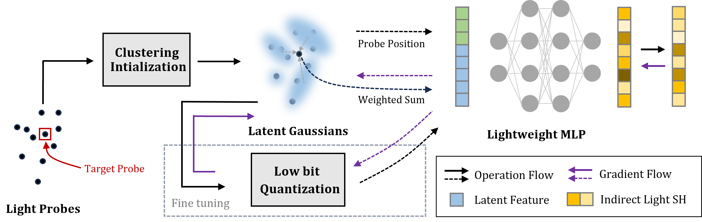

Abstract
Precomputed global illumination (GI) techniques, such as light probes, particularly focus on capturing indirect illumination and have gained widespread adoption. However, as the scale of the scenes continues to expand, the demand for storage space and runtime memory for light probes also increases substantially. To address this issue, we propose a novel Gaussian fitting compression technique specifically designed for light field probes, which enables the use of denser samples to describe illumination in complex scenes.
The core idea of our method is utilizing low-bit adaptive Gaussian functions to store the latent representation of light probes, enabling parallel and high-speed decompression on the GPU. Additionally, we implement a custom gradient propagation process to replace conventional inference frameworks, like PyTorch, ensuring an exceptional compression speed.
At the same time, by constructing a cascaded light field texture in real-time, we avoid the need for baking and storing a large number of redundant light field probes arranged in the form of 3D textures. This approach allows us to achieve further compression of the memory while maintaining high visual quality and rendering speed. Compared to traditional methods based on Principal Component Analysis (PCA), our approach consistently yields superb results across various test scenarios, achieving compression ratios of up to 1:50.
Video
Method

Overview of the compression pipeline. Given scattered light probes, Gaussian functions are initialized via clustering and jointly optimized with a lightweight MLP decoder. After convergence, parameters are quantized to low-bit integers for compact storage.
Results